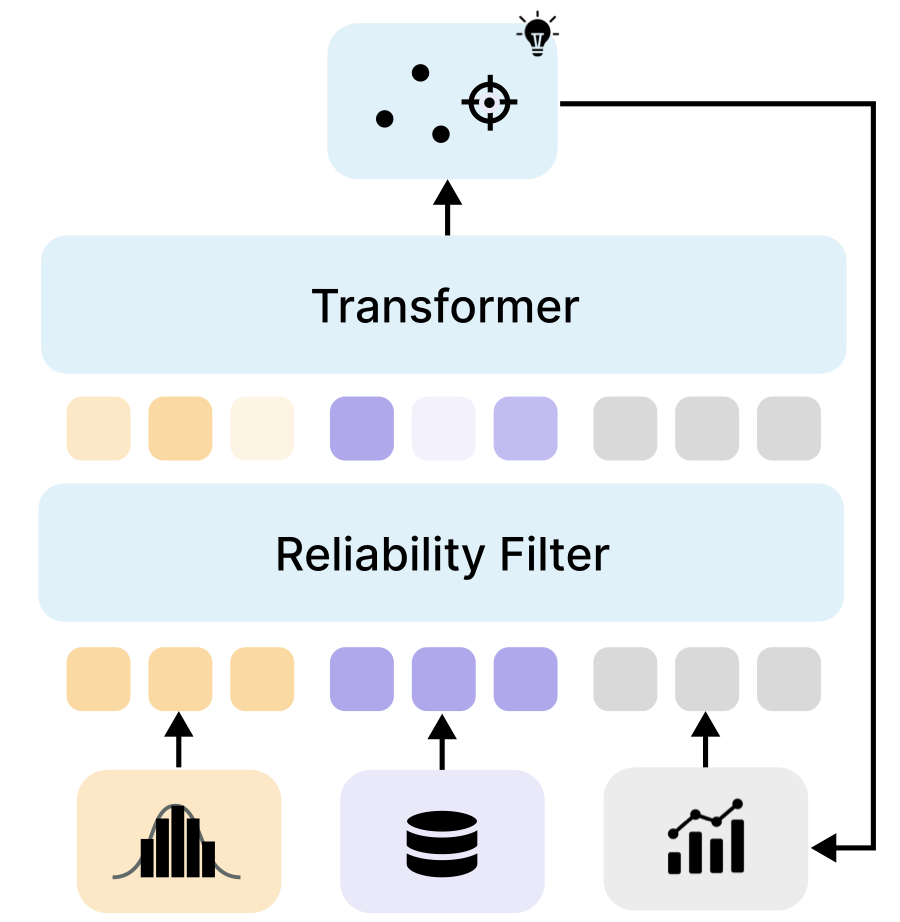

NeurIPS 2026
Use priors and past experiments at deployment, without retraining.
Amortized Bayesian Experimental Design with In-Context Knowledge Conditioning Zhanghu Zhao, Daolang Huang, Xinyi Wen, Samuel Kaski
